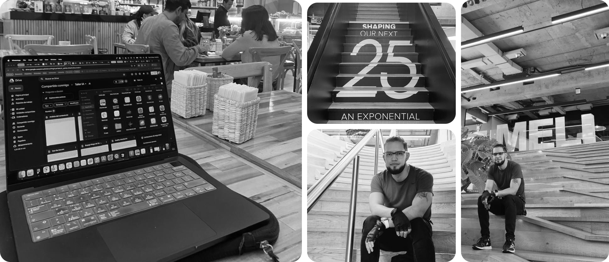

Why Mercado Libre Was the First Place I Didn't Want to Leave
A reflection on professional growth, internal rotation, and how to find an environment that keeps challenging you.

A couple of years ago, during a job interview, I was asked an unexpected question: why have you stayed at the same company for so long? It caught me off guard, but the question stayed with me. What I discovered as I reflected on it became this article.
Early in my career, I changed jobs quickly. I would start with sky-high motivation, and as I got to know the ins and outs of each company, I would get caught up in a cycle of learning about the business and its approach that, after a couple of months, felt like it was draining my energy.
Eventually, after a little over a year at a company, my energy would be so depleted that I would start looking for new opportunities again. In three years, I worked at three different companies in Colombia’s startup ecosystem, on projects ranging from video game design and on-demand interface design for Colombian clients to designing an MVP for the first marketplace for Venezuelan families, where relatives abroad could pay for groceries in dollars and have them delivered to their families’ homes. A preview of my future experience at Mercado Libre.
After that experience, I joined Mercado Libre in 2021, and much of my approach changed.
Unlike anywhere I had worked before, Mercado Libre was the first place where I found myself in a huge environment, surrounded by hundreds of designers. Many were among the most brilliant people I had ever met in my career. It was also a place where design was mature enough to give the profession the recognition it deserved, treating it as more than the ability to make screens look good, which is where so many of us start our careers.
This is where my professional growth expanded beyond the visual craft that had occupied so much of my time studying graphic design. In this environment, I learned about:
- Design and its direct relationship with strategy.
- Clearly defining goals for the user experience.
- Qualitative and quantitative research as the foundation for understanding a problem and proposing a solution.
- Framing the problem as the starting point for any project.
- Storytelling and a story-first approach, where the UI is designed around the story, rather than the other way around.
- The importance of metrics in products used at scale, where even the smallest changes can create friction that leads to financial losses for the business.
- The value of a culture built around giving and receiving feedback on details that often go unnoticed.
There is a lot I could take away from my five years at this company, but I wanted to distill it into four key lessons. These are the lessons I’m taking with me after working across four teams and projects within the company.
Lesson #1: Design is not an end in itself; it serves a larger purpose
Before Mercado Libre, my mindset was that design was an end in itself. That is a common mistake among junior designers, and it is easy to spot in their work.
How many times have you seen a portfolio where a designer says “I created this app,” followed by a bunch of mockups showing how beautiful and polished the interface is? Maybe you’re one of them, and there’s nothing wrong with admitting it. I was one of them many years ago.
The lesson is that a design should not be judged solely by its level of craft and attention to detail, but by the results it brings to the business. And how can you know the impact your design has on the business if you don’t understand the business or how its success is measured?
Lesson #2: Experience adapted to context defines seniority, not a list of requirements
For years, including my early days at Mercado Libre, I was obsessed with professional growth. I was always looking for something more to do, to learn, and to improve.
Along the way, I also met people who were pursuing growth for the wrong reasons. The question that kept coming up was: what am I missing to become a senior designer? Almost as if reaching a certain level of seniority meant checking off years of experience and knowledge acquired.
The truth is, it doesn’t work that way. People reached high levels of seniority at very different stages of their lives, at different ages, in different contexts, and at different points in their development as designers. Today, I can tell you that the skills of a senior designer in 2020 are nowhere near the same as those of a senior designer in 2026.
Lesson #3: Ownership is the extra mile that sets you apart
It’s common for people to do what they’re asked without thinking about the best version of a product.
Have you ever looked at a product and thought, “I’d change this if I could”? Being a product designer and looking at the experiences around you is like being a chef and trying dishes at a new restaurant every week. You’re bound to find things that catch your attention, things you don’t like, things that feel new, and things you can bring into your own work.
That extra mile is what sets an excellent designer apart from an average one, and you can find inspiration anywhere.
Lesson #4: Design goes beyond the visual; every part of an experience is designed, consciously or unconsciously
This was perhaps my most painful lesson, coming from a background in graphic design. To me, design used to mean the interface and attention to detail, but I soon realized that was only one part of it.
The story, the words, the user journey, and the context of use are just as important as the interface itself, if not more so. To be a good product or UX designer, you need more than strong craft. You also need to be good at communicating ideas and telling stories, a skill that many of us who come from graphic design overlook.
These are four of the lessons I’ve learned during my time at Mercado Libre, beyond hard skills such as using AI, learning motion design, conducting research, and other skills typical of the profession. Today, I understand that staying in one place doesn’t always mean standing still; sometimes it means finding an environment where the challenge changes before you have to go looking for it elsewhere.
Do you agree with this reflection? What stood out to you? Is there anything you’d like to discuss with me?
I’d love to read your thoughts. And if you’d like to get in touch about a new job opportunity, a freelance project, mentoring, or simply to talk about design and UX, reach out anytime.
Take care!